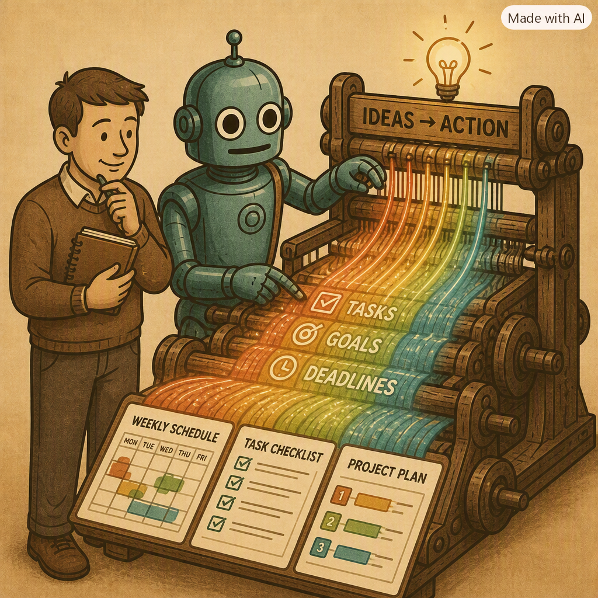
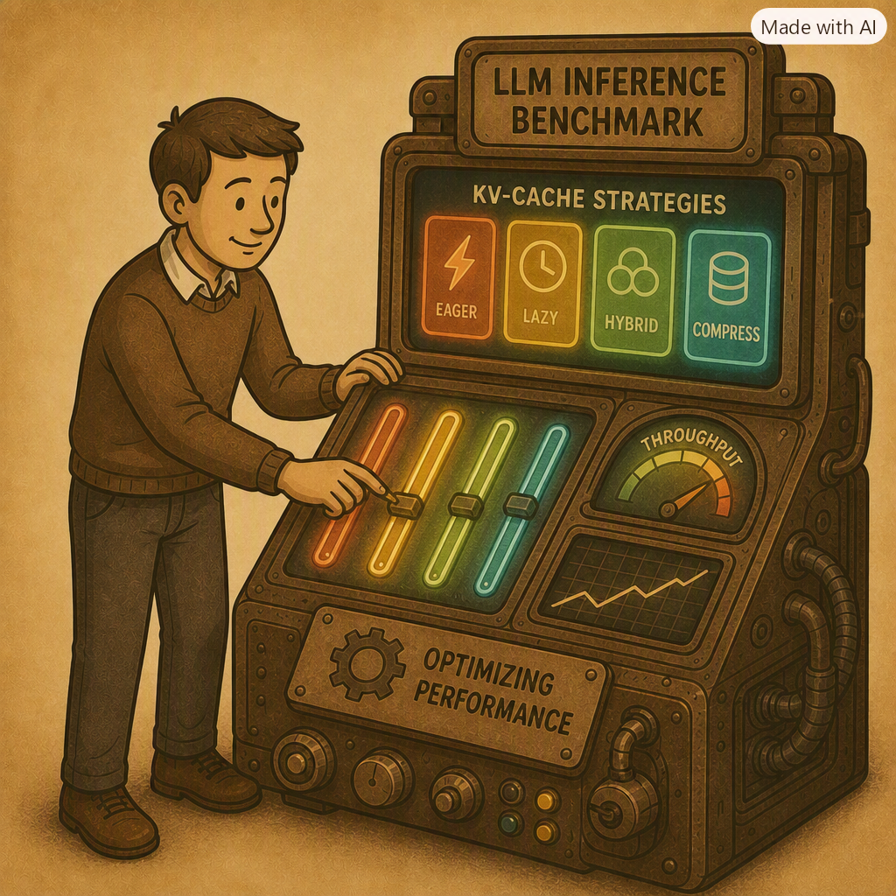
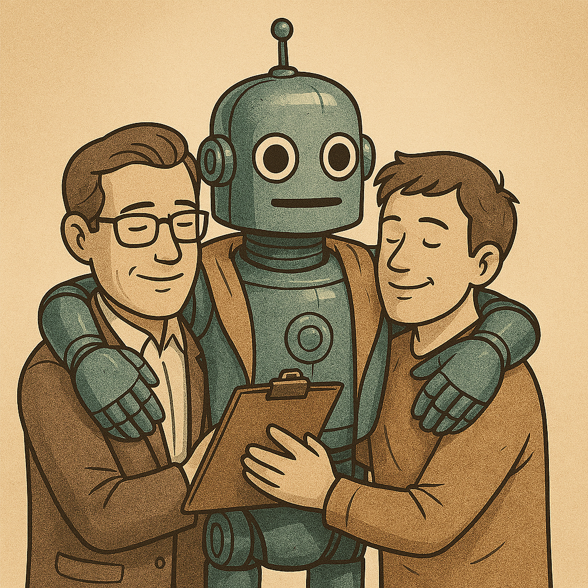
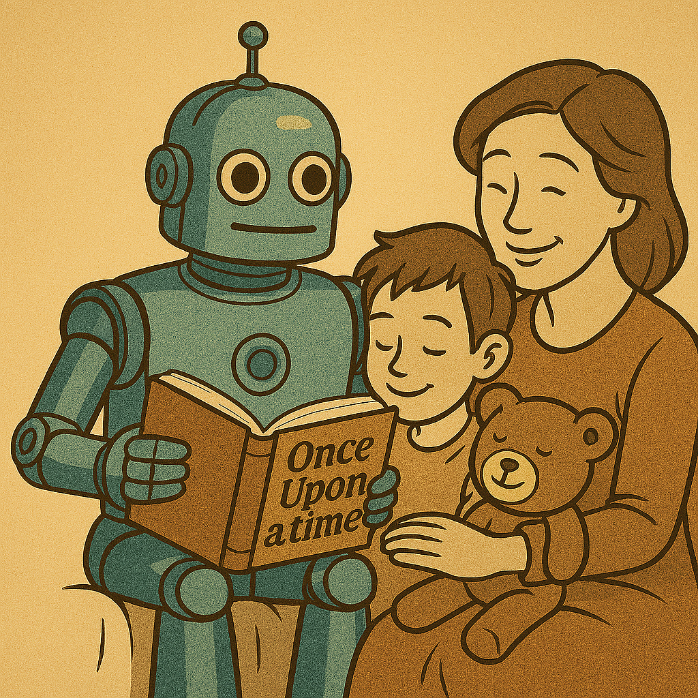

Concise summaries, key highlights, and links to code or reports.

January 2026 - May 2026 | New York, NY
A compact multi-agent planner that turns a one-line goal into validated, scheduled plans. LLMs handle language (decomposition, critique, rationale) while deterministic Python handles scheduling and validation for correctness.
Context: Final project for STAT GR5293. LangGraph coordinates three deterministic schedulers with a human approval checkpoint. Evaluation: a 317-test automated suite and a 20-user study (85% 4–5★), with users saving 30–60 minutes per planning task. Repository: kanewyp/calendar_planning_agent

January 2026 - May 2026 | New York, NY
A unified benchmark of KV-cache strategies for long-context LLM inference. Measured memory, latency, and quality across single-request and concurrent workloads to find practical trade-offs.
Context: HPML final project comparing Full Cache, H2O, StreamingLLM, and PagedAttention on Qwen2.5-7B. Highlights: StreamingLLM yields large memory reductions on short tasks; H2O can fail on long-form decoding; PagedAttention preserves quality and performs best under concurrent loads. Under realistic traces, KV memory became the main throughput bottleneck. Full report available below.

December 2025 - Present | New York, NY
A RAG-based journaling assistant that analyzes emotional patterns over time and surfaces actionable summaries for therapists and self-reflection.
July 2025 - September 2025 | Hong Kong, HK
Enterprise-grade, end-to-end MLOps system for real-time credit card fraud detection. Built a Kafka-to-Spark streaming pipeline processing 50k events/s with sub-70ms inference latency; orchestrated intraday training and model registration with Airflow and MLflow.

November 2025 | New York, NY
Fine-tuned Qwen3-1.7B small language model (SLM) for child-safe story generation. Targeted working parents needing quick, safe and creative bedtime stories. Achieved top 4 recognition among 50+ competing teams at AWS & AGI House Build Day.
July 2025 - August 2025 | Hong Kong, HK
NLP-based news recommendation engine using comparative deep learning architectures. Deployed as scalable Streamlit application supporting 500+ concurrent users with sub-second latency.